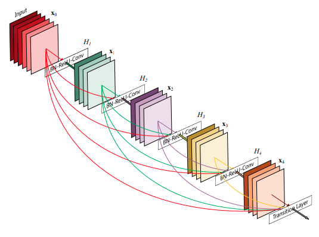
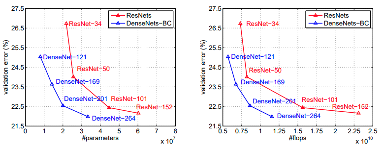
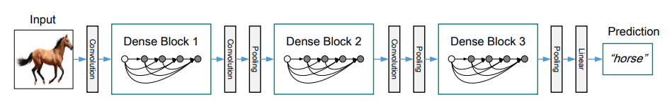
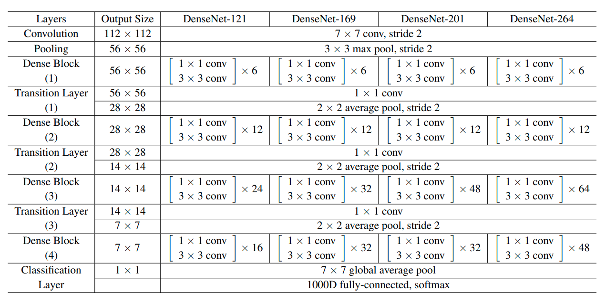

Skip connection và concatenate
Trước đó, kiến trúc ResNet được công bố và nó đã cho thấy được sức mạnh của các Skip Connection khi chúng được thêm vào các mô hình từ sâu cho đến rất sâu (ví dụ như ResNet152). Ta thấy rằng những kiến trúc áp dụng Skip Connection trước đây đều có một điểm chung là trong một block thì ta sẽ có những điểm nối 1 feature map vào làm input của một layer sau đó, và chúng đều sử dụng phép toán cộng.
Residual block trong ResNet sử dụng skip connection với phép toán cộng
Nguồn: Idiot Developer
{kind=link}
Công thức về Skip Connection trong block trên có thể được viết như sau:
$$ x_l = H_l(x_{l - 1}) + x_{l-1} $$
, với $H_l$ là phép biến đổi phi tuyến ở layer thứ $l$, $x_l$ là output của layer thứ $l$.
Paper DenseNet giới thiệu một kiến trúc với ý tưởng là feature-map tại layer $l$ sẽ sử dụng toàn bộ feature-maps ở phía trước (layer $l - 1, l - 2,…$) để làm input, và chúng sử dụng concatenate (thay vì phép toán cộng như ResNet). Với tư tưởng như vậy, các feature-maps ta có được có thể xem là một trạng thái có phạm vi toàn cục và bất kì layer nào cũng có thể sử dụng trạng thái này trong việc tính toán ra feature-maps của nó. Nếu viết theo kiểu công thức thì ta sẽ có
$$ x_l = H_l([x_0, x_1,…, x_{l-1}]) $$
Lưu ý. Để thực hiện phép toán concatenate thì các feature-maps phải có cùng size, hay là width và height.
Một ví dụ cho kiến trúc DenseNet như sau:

- Trong hình trên, với $L$ layer, ta có $\dfrac{L(L+1)}{2}$ kết nối trực tiếp giữa các layer. Các kết nối có vẻ rất dày đặc (hay là dense) —> Tên của kiến trúc được đặt là Dense Convolutional Network (DenseNet).
Bàn về cách tổ chức các liên kết như vậy một chút:
-
Nhóm tác giả cho rằng kiến trúc như DenseNet sẽ đảm bảo lượng thông tin cũng như gradient truyền qua các layer là nhiều nhất có thể , từ đó mô hình sẽ có thể học được từ nhiều thông tin hơn, và tất nhiên là nó sẽ tạo ra hiệu ứng làm dịu bớt hiện tượng vanishing gradient.
-
Đồng thời, việc sử phép toán concatenate có mang đến cho ta trực giác là có sự phân biệt rõ hơn giữa input trực tiếp từ layer ở ngay phía trước nó với các thông tin được “lưu trữ” và truyền đến từ các layer ở phía trước nữa. Nếu sử dụng phép toán cộng, những yếu tố này đã bị pha lẫn vào nhau.
Có một chi tiết mà ta thường nghĩ đến ở các mô hình có kiến trúc rất sâu (nhiều layer) là số lượng tham số của nó sẽ rất lớn. Tuy nhiên, với DenseNet thì điều này không phải là vấn đề. Số feature-maps của các layer trong DenseNet sẽ rất nhỏ (chỉ tầm không quá 60), với lý do là để tính toán cho layer kế tiếp thì ta đã dùng toàn bộ feature-maps ở các phía trước rồi chứ không phải chỉ mỗi layer liền trước nó như hầu hết các mô hình khác, nên tại mỗi layer ta chỉ cần tầm đó là đủ rồi 😀
Kết quả so sánh giữa DenseNet và ResNet trên dataste ImageNet được các tác giả công bố như hình bên dưới. Ta thấy rằng DenseNet có số lượng tham số và số phép toán ít hơn ResNet, cùng với độ hiệu quả cao hơn.

Dense block, transition layer và growth rate
Dense block và transition layer
Ta thấy rằng nếu áp dụng ý tưởng kết nối dày đặt của DenseNet cho toàn bộ layer trong mô hình thì toàn bộ feature-maps trong tất cả layer này đều phải có cùng size (do phép toán được sử dụng là concatnerate).
Tuy nhiên, nếu toàn bộ các layer trong kiến trúc đều có cùng size như vậy thì ta khó mà down-sampling feature-maps về các size nhỏ hơn và rồi sau đó sử dụng các layer như Average Pooling, Dense để cho ra output như các kiến trúc khác được. Và việc “cô đọng” kiến thức của mô hình cũng sẽ gặp khó khăn.
Do đó, ý tưởng kết nối dày đặt được các tác giả áp dụng trong từng khối (gọi là Dense block), việc down-sampling sẽ được thực hiện trong các khớp nối các Dense block với nhau (gọi là Transition layer).
Có tổng cộng 4 dạng Dense block như sau:
-
Dense block cơ bản:
- Hàm $H_l$ trong block này là sự kết hợp theo thứ tự 3 phép toán:
$$ BN \to ReLU \to Conv 3 \times 3 $$
Ngoài ra, ta có thể thêm dropout vào sau Conv để giảm overfitting.
-
Dense-B block (bottleneck):
- Để tăng hiệu suất về mặt tính toán, ta có thể thêm một phép toán Conv $1 \times 1$ vào $H_l$ để giảm bớt số lượng feature-maps input. Lúc này, thứ tự các phép toán sẽ là
$$ BN \to ReLU \to Conv 1 \times 1 \to BN \to ReLU \to Conv 3 \times 3 $$
-
Dense-C block (compression):
- Ta sẽ giảm số lượng output feature-maps của các Dense block theo tham số $0 < \theta \leq 1$: từ $m$ feature-maps thành $\lfloor \theta m \rfloor$
- Thông thường, phần cài đặt của thao tác compression được ghép vào transition layer.
-
Dense-BC block:
- Kết hợp bottleneck và compression vào Dense block.
Trong kiến trúc tổng thể, nếu trước đó ta dùng Dense-C hoặc Dense-BC block thì theo sau nó sẽ có thêm layer bottleneck (Conv $1 \times 1) và thành phần này gọi là transition layer. Bên cạnh conv layer, thành phần không thể thiếu trong transition layer là một lớp Pooling (các tác giả sử dụng Average Pooling) để thực hiện down-sampling các feature-maps. Thứ tự các phép toán trong transition layer sẽ là
$$ BN \to ReLU \to Conv 1 \times 1 \to AvgPool 2 \times 2 $$
Growth rate
Như đã đề cập ở phần ý tưởng, lượng tham số trong DenseNet được tối thiểu hóa là nhờ vào chi tiết số lượng feature-maps tại các layer trong DenseNet là nhỏ. Các tác giả xem số lượng feature-maps $k$ tại các layer là một siêu tham số của DenseNet, và nó được gọi là growth rate.
Thực nghiệm cho thấy rằng các giá trị $k$ mang lại kết quả tốt trên các dataset thường không quá lớn. Về mặt trực giác, ta có thể hiểu $k$ điều chỉnh lượng thông tin mới mà một layer có thể đóng góp vào trạng thái toàn cục (đóng góp một lượng vừa đủ thì sẽ tốt hơn là quá nhiều hay quá ít).
Minh họa Dense Block với growth rate là 4
Nguồn: https://reliablecho-programming.tistory.com/3
{kind=link}
Kiến trúc DenseNet
Tùy vào loại Dense block được sử dụng, ta cũng có các tên gọi khác nhau cho DenseNet (DenseNet, DenseNet-B, Denset-C, DenseNet-BC). Kiến trúc DenseNet-C (hoặc DenseNet-BC) với 3 Dense block được mô tả trong hình bên dưới:

- Trước khi đến với quá trình tính toán qua các Dense block và Transition layer, ta có một layer Conv (và có thể có thêm Pooling, BN) như đa số các kiến trúc CNN khác. Các layer của của mô hình cũng sử dụng Global Pooling và Dense cùng activation softmax để tạo ra vector output.
Các mô hình được nhóm tác giả thử nghiệm với dataset ImageNet được tóm tắt như sau:

Quan sát bảng trên, ta có nhận xét là các mô hình trên đều thuộc loại DenseNet-BC. Ngoài ra, các tác giả cho biết giá trị growth rate được sử dụng là $k=32$.
Cài đặt
Các bạn có thể tham khảo phần cài đặt DenseNet bằng Tensorflow và Pytorch tại repo sau.
Khi cài đặt DenseNet, ta thường sẽ hơi phân vân về cách cài đặt các Dense block. Làm sao để cài đặt các kết nối dày đặc như vậy?
Thực ra cách cài đặt là rất đơn giản. Ta gọi khối gồm (Conv 1x1, Conv 1x3) như hình trên là bottleneck block (bb). Khi đó 1 dense block với 4 bottleneck block sẽ có dạng như sau:
- x → bb_1 → x1 → bb_2 → x2 → bb_3 → x3 → bb_4 → x4 (output)
Trong đó:
- bb_1.input =
- bb_2.input = [x1, x]
- bb_3.input = [x2, x1, x]
- bb_4.input = [x3, x2, x1, x]
Mã giả cho cách cài đặt dense block này như sau:
|
|
Như vậy, ta hoàn toàn có thể dùng một vòng lặp để cài đặt dense block:
|
|
Tài liệu tham khảo
- Paper DenseNet: https://arxiv.org/abs/1608.06993